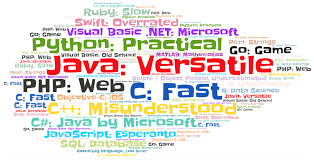

Programming Languages
Links:
Programming Languages
A complete description of a programming language includes the computational model, the syntax and semantics of programs, and the pragmatic considerations that shape the language. Keywords and phrases: Computational model, computation, program, programming language, syntax, semantics, pragmatics, bound, free, scope, environment, block. Programming languages are the medium of expression in the art of computer programming
languages allow us to give instructions to a computer in a language the computer understands. Just as many human-based languages exist, there are an array of computer programming languages that programmers can use to communicate with a computer. The portion of the language that a computer can understand is called a “binary.” Translating programming language into binary is known as “compiling.” Each language, from C Language to Python, has its own distinct features, though many times there are commonalities between programming languages. These languages allow computers to quickly and efficiently process large and complex swaths of information. For example, if a person is given a list of randomized numbers ranging from one to ten thousand and is asked to place them in ascending order, chances are that it will take a sizable amount of time and include some errors. There are dozens of programming languages used in the industry today. We've compiled overviews of the 12 most important, relevant and in-demand of these languages below.
